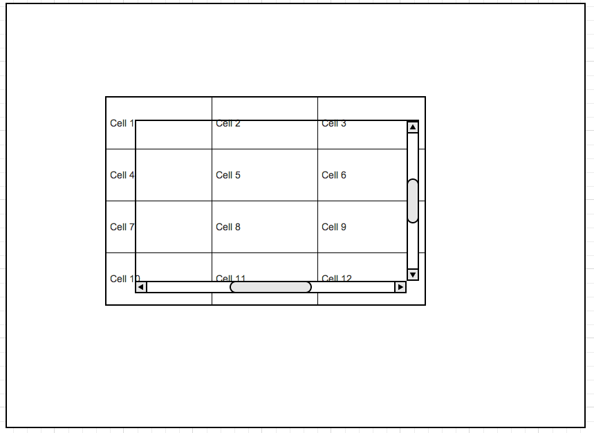

Fat table,
when size matter
Paul Masurel / @fulmicoton
http://fulmicoton.com">@fulmicoton
UI experience
- impossible to work with more than 100s of columns
- infinite scroll does not allow jump
Scientific method, my friend
First experiment
[fiddle]
for (var i =0; i<100000; i++) {
$square.css("top", i/1000);
}
Conclusion?
Repaint occur once per-event loop
Second experiment
[fiddle]
var $left = $("div.left");
var $right = $("div.right");
for (var i =0; i<100; i++) {
$left.css("width", i);
console.log($right.position());
}
Conclusion?
The browser may compute the layout more than once
per-event loop.
The internet says yes
Reflow
Repaint
When does it reflow?
Dirty-bit
Display:none to be sure
Back to our problem
- Reflow probably linear with the number of elements displayed
- Repaint probably linear with the number of elements on screen
Let's handle the DOM on our own!

Pro-tips: Recycle your DOM elements
Using a pool for instance
fattable
[fattable](http://fulmicoton.com/fattable/index2.html)
PROBLEM: scrollbar
[stackoverflow]
[fiddle]
var onscroll = function() {
var y = $("#container").scrollTop() + 30;
var z = 0
for (var c=0; c<y*10000; c++) {
z+=c;
}
$("#label").text("bocal : "+z);
$("#label").css("top", y);
};
$('#container').scroll(onscroll);
Solution
Uncouple scrollbar from container
Misc
- Firefox mouse move
- IE9 is by spec a different beast with DOCTYPE html
- pointer-events: none